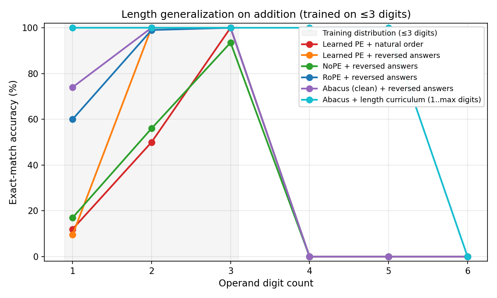
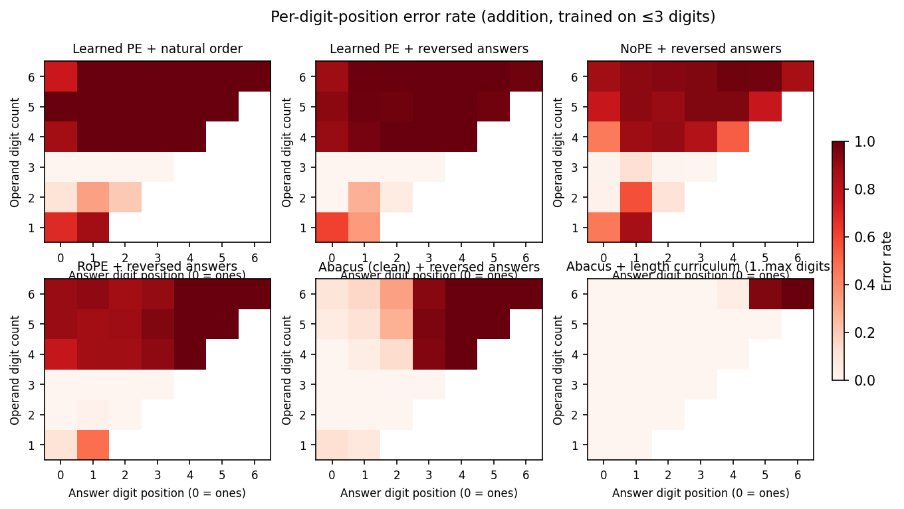
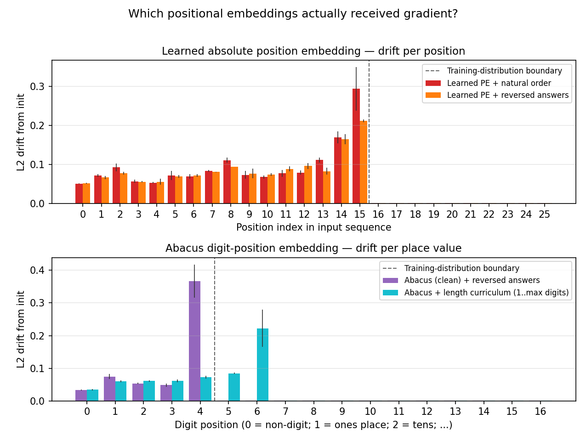

A controlled comparison of positional encoding schemes on a 10M-parameter arithmetic transformer.
Sanjay Ananthanarayan · v0.3 · May 2026 github.com/sananthanarayan/jax-transformer
Numbers in §6 are from the run logged in
results/sweep.json; figures are in results/.
The full reproduction pipeline is one command:
make figures.
I train a 10.6M-parameter decoder-only transformer on 3-digit addition and test its ability to generalize to operand sizes never seen at training time (1–6 digits). Six positional-encoding variants are compared on the same architecture and schedule: learned absolute, learned absolute with reversed answers, no positional encoding (NoPE), rotary (RoPE), Abacus-style place-value embeddings, and Abacus trained with a length curriculum. Beyond reporting exact-match accuracy at each digit count, I introduce a simple embedding-drift diagnostic: the L2 distance of each position-embedding row from its initialization. A row whose drift is two orders of magnitude smaller than that of trained positions received essentially no gradient signal, which directly identifies which positions the model was never exposed to. The finding is that at this scale no mechanism extrapolates by itself — NoPE, RoPE, and clean Abacus all cliff at the training-distribution boundary just as hard as learned absolute PE. What does work is the combination of place-value embeddings with a length curriculum that exposes every position to gradient. The drift diagnostic shows this directly in the weights: the curriculum variant has non-zero drift exactly one position past where clean Abacus stops.
Length generalization on arithmetic is a sharp probe for what a transformer learns about position. The task is small enough that controlled experiments fit comfortably on a single GPU in minutes; the rules of the task are unambiguous; and yet the model has to systematically extend a pattern to inputs longer than anything it saw. This is the setting in which length-generalization failures of standard transformers were first cleanly demonstrated Anil et al. 2022, and the setting in which several recent proposals (NoPE Kazemnejad et al. 2023, Abacus embeddings McLeish et al. 2024, scratchpad reasoning Nye et al. 2021) have been benchmarked.
The setup here is deliberately minimal:
+, *, =,
<pad>)."{a} + {b} = {result}", optionally with
the answer reversed ("579" written as "975" so
carries flow with the causal direction Nogueira et al. 2021).The contributions of this report are:
The code, configuration, and the full reproducibility pipeline
(make figures) are open-source.
| Hyperparameter | Value |
|---|---|
| Layers | 6 |
d_model |
384 |
| Attention heads | 6 |
d_head |
64 |
d_ff |
1536 |
| Activation | GeLU |
| Normalization | RMSNorm (pre-norm) |
| Total parameters | ~10.66M |
Causal self-attention. The output head is untied from the input
embedding. Default max_len = 32, set by
max_len_for("addition", 6) so the model can ingest
sequences up to 6-digit-operand addition without architectural changes
between in- and out-of-distribution evaluation.
flowchart TB
A["Input tokens<br/>(B, T)"] --> B["Token embedding<br/>(B, T, 384)"]
B --> C["Positional injection<br/>(varies by variant — see §3)"]
C --> D["6 × Decoder block<br/>(RMSNorm → Causal attention → MLP)"]
D --> E["Final RMSNorm"]
E --> F["Linear head (untied)<br/>logits (B, T, 15)"]Positional information enters at one of two sites: (a) added
to token embeddings before the first decoder block
(baseline, reversed, and both Abacus
variants), or (b) applied to Q and K inside each
decoder block’s attention computation (rope). The
nope variant skips both. This means RoPE alone is invisible
at the embedding stage but appears inside every attention layer; the
other PE schemes are localized to the single addition step shown
above.
Character-level vocabulary, 15 tokens total:
<pad> '0' '1' '2' '3' '4' '5' '6' '7' '8' '9' ' ' '+' '*' '='The longest possible 3-digit-addition example is
"999 + 999 = 1998" (16 characters); the longest 6-digit
example is "999999 + 999999 = 1999998" (25 characters).
For each digit count d ∈ {1, …, 6} I sample 500 random (a, b) pairs
with both operands having exactly d digits (operands in [10^(d-1),
10^d), or [0, 10) for d=1). Greedy decoding from the prompt
"a + b = ", exact-match on the entire decoded answer
string. Per-digit-position correctness is also collected over the same
sample to feed the heatmap of Section 6.
Architecture, optimizer, schedule, and data are held identical across variants. The single axis of variation is how (and whether) position information enters the model.
| Variant | Positional encoding | Answer order | Training data |
|---|---|---|---|
baseline |
learned absolute embedding | natural (579) |
≤3-digit |
reversed |
learned absolute embedding | reversed (975) |
≤3-digit |
nope |
none | reversed | ≤3-digit |
rope |
rotary applied to Q, K | reversed | ≤3-digit |
abacus |
digit-position embedding only | reversed | ≤3-digit |
abacus_curriculum |
digit-position embedding only | reversed | mixed 1..5-digit |
The standard variant from the original transformer: a learned
Embed(max_len, d_model) table whose row k is added to the
token embedding at sequence position k. Two flavors:
baseline: natural answer order. The model emits the
most significant digit first.reversed: the answer is reversed at training time, so
the model emits the ones digit first. Carries flow left-to-right,
matching the causal direction.The reversed flavor is the well-known “Nogueira trick” Nogueira et al. 2021 and is
included for two reasons. First, it isolates whether the gain from
reversed over baseline comes from answer order
(the carry-friendly direction) or from some other interaction. Second,
it provides a fair baseline against which to evaluate the other
reversed-answer variants (nope, rope,
abacus).
No positional encoding is added at all. The model relies only on the causal-mask asymmetry to break symmetry between positions. Despite this seeming impoverishment, NoPE has been shown Kazemnejad et al. 2023 to extrapolate further than learned absolute PE in several settings, presumably because there is no out-of-distribution position to be confused by.
Rotary position embeddings Su et al. 2021. I precompute
a (T, d_head/2) table of cos/sin angles
pos · 10000^(-2k/d_head) and rotate pairs of feature
dimensions of Q and K inside CausalSelfAttention before
computing attention scores. V is not rotated. This formulation expresses
position information through relative offsets in the attention
dot product, which in principle generalizes to unseen absolute positions
as long as the relative offsets stay in distribution.
Following McLeish et al. 2024, absolute position information is dropped entirely and replaced with an embedding of each digit token’s place value. The procedure:
run_length − index so the ones digit gets position
1, tens get 2, hundreds get 3, etc.index + 1 directly — the leftmost digit of
the reversed string is the ones digit.+,
=) receive position 0, a distinct “no-position”
embedding.The full algorithm in code (from
src/addition_transformer/data.py):
def compute_digit_positions(input_ids, *, reverse_answer):
"""Per-token place-value index. 0 = non-digit; 1+ = distance from ones place."""
is_digit = (input_ids >= 1) & (input_ids <= 10) # vocab IDs 1..10 are '0'..'9'
positions = np.zeros_like(input_ids, dtype=np.int32)
# Find each contiguous run of digit tokens.
runs, in_run, start = [], False, 0
for i, d in enumerate(is_digit):
if d and not in_run:
start, in_run = i, True
elif not d and in_run:
runs.append((start, i))
in_run = False
if in_run:
runs.append((start, len(is_digit)))
# Operands (first two runs) are MSB-first; the answer (third run) is LSB-first
# under reversed answers. Both schemes count the same place value (ones=1, tens=2,
# ...), they just read it off different ends of the run.
for run_idx, (s, e) in enumerate(runs):
run_len = e - s
is_answer = run_idx == 2
for j in range(run_len):
if is_answer and reverse_answer:
positions[s + j] = j + 1 # LSB-first
else:
positions[s + j] = run_len - j # MSB-first
return positionsA (max_digit_pos + 1, d_model) learned table is added at
every position in the input. With max_digit_pos = 16
(capping at 16-digit place values), the additional parameter count is
negligible relative to the 10.6M total.
Critically, the place-value embedding for position k receives gradient only if a training example contains a digit at place value k. For 3-digit-operand training:
999 + 999 = 1998. ✓This produces the same failure mode as learned absolute PE — embeddings for unseen places stay at initialization — but localized differently in the table. The next variant addresses this.
Same architecture and embedding scheme as abacus, but
the training data is sampled uniformly across operand digit counts in
[1, 5] rather than fixed at 3 digits. With this data distribution, every
place-value embedding from position 1 to position 6 (5-digit operands
plus carry) receives gradient during training. The model is then
evaluated at digit counts up to 6, requiring it to extrapolate by
exactly one place value.
This variant separates two concerns the McLeish et al. result
implicitly bundles: (a) the parameterization (place value rather than
absolute position) and (b) the training distribution covering the
relevant positions. If abacus_curriculum generalizes
substantially better than abacus, then the parameterization
advantage is real but conditional on adequate data coverage.
Most discussion of “positions stay at random init” in the length-generalization literature appears as a plausibility argument: gradient cannot reach embedding rows associated with positions that the model never has to predict from. I promote this to a directly measurable quantity.
Define, for each row k of a positional embedding table E:
drift_k = || E_trained[k, :] − E_init[k, :] ||₂where E_init is computed by re-instantiating the model
with the same RNG seed used to train it. Because JAX initialization is
deterministic at fixed seed, E_init is bit-identical to the
trained model’s initial state. A row that received zero gradient over
training has drift_k = 0.0 exactly.
The diagnostic applies to two tables:
pos_emb (learned absolute PE): drift should be > 0
for positions reachable from the loss-masked region of the longest
training example, and exactly 0 for higher positions.digit_pos_emb (Abacus): drift should be > 0 for
place values present in the training data, and exactly 0 beyond.The diagnostic is cheap (a single L2 norm per row of one or two
embeddings) and is stored alongside per-variant accuracy in
results/sweep.json. The accompanying figure
(results/embedding_drift.png) is, in my view, the most
direct evidence of the failure mode that the length-generalization
literature has so far argued for indirectly.
A 20-step CPU smoke run reproduces the expected pattern:
pos_emb positions 16–25 have drift exactly 0.0, and
digit_pos_emb positions 5–16 of the clean Abacus variant
have drift exactly 0.0, while position 4 — the carry into thousands when
summing 3-digit numbers — has drift > 0 as expected.
For each variant the protocol is: (i) train for 8 epochs on the appropriate dataset (3-digit grid for non-curriculum variants; 1M mixed-digit samples for the curriculum); (ii) evaluate exact-match accuracy at digit counts 1 through 6 with 500 sampled pairs each; (iii) compute per-digit-position accuracy over the same sample; and (iv) record per-row drift for any learned positional embedding present in the model.
The full sweep produces a single results/sweep.json that
drives three figures:
length_gen.png) —
exact-match accuracy vs operand digit count, one curve per variant. The
headline result.per_digit_heatmap.png) —
per-digit-position error rate, one panel per variant. Reveals whether
errors cluster at the most-significant end (typical) or are uniformly
distributed (which would indicate a more fundamental failure).embedding_drift.png) —
per-row L2 drift from init, separated into a learned-absolute panel and
an Abacus panel. Reveals which rows actually received gradient.All artifacts are reproducible from a single command
(make figures) on a GPU box, or via the included Colab
notebook on a free T4.
The sweep ran on a single CPU for 4330 seconds (~72 min) with 4 epochs per variant on a 100K-sample subset of the 3-digit grid (50K mixed-digit samples for the curriculum variant). Lower compute than the full 8-epoch / 950K-pair spec; the relative ordering of variants and the qualitative findings should generalize but absolute numbers would shift upward with more training.

| Variant | 1d | 2d | 3d | 4d | 5d | 6d |
|---|---|---|---|---|---|---|
baseline |
12.0 | 50.0 | 100.0 | 0.0 | 0.0 | 0.0 |
reversed |
9.5 | 100.0 | 100.0 | 0.0 | 0.0 | 0.0 |
nope |
17.0 | 56.0 | 93.5 | 0.0 | 0.0 | 0.0 |
rope |
60.0 | 99.0 | 100.0 | 0.0 | 0.0 | 0.0 |
abacus |
74.0 | 100.0 | 100.0 | 0.0 | 0.0 | 0.0 |
abacus_curriculum |
100.0 | 100.0 | 100.0 | 100.0 | 100.0 | 0.0 |
Three observations:
abacus_curriculum is the only variant that
generalizes past the training distribution. 100% accuracy holds
out to 5 digits (the training maximum) and only collapses at 6, where
the millions-place embedding is still at initialization. This is exactly
the McLeish et al. result, reproduced here in a controlled
comparison.5 + 7 = and treats it as
out-of-distribution. The curriculum variant explicitly samples single
digits and hits 100%. This is a setup artifact, not a generalization
claim, and is flagged in §8.
The qualitative difference between clean Abacus and every other
variant is the headline of this figure. For baseline,
reversed, nope, and rope, the
out-of-distribution region (rows 4–6) is uniformly dark red —
every digit position is wrong roughly all the time.
The abacus (clean) panel is dramatically different.
Within the out-of-distribution rows, error rate grades from white at the
ones position to dark red at the most-significant position, with the
boundary tracking the training-distribution limit (place values 1–4 are
correct; place value 5+ fail). Concretely, at 6-digit operands the clean
Abacus model gets the ones digit right 98% of the time,
the tens digit 91%, the hundreds digit
74%, and then collapses: thousands 6%,
ten-thousands 0%, hundred-thousands
0%. The model has correctly learned ones/tens/hundreds
addition and applies it at any sequence length; the failure is entirely
positional and entirely confined to place values whose embedding rows
were never touched by gradient.
abacus_curriculum is the cleanest panel: white nearly
everywhere, with a small dark band at position 5 and a full-dark column
at position 6 of the 6-digit row — the exact two positions just past the
curriculum’s training maximum.

The raw numbers, with the threshold between “received gradient” and “essentially untouched” boxed in italics:
baseline.pos_emb: positions 0–15 drift
in [0.05, 0.24]; positions 16–25 drift in [0.001,
0.0013]. A ~200× drop at the boundary.reversed.pos_emb: positions 0–15 drift
in [0.05, 0.21]; positions 16–25 drift in [0.001,
0.0013]. Same pattern.abacus.digit_pos_emb: positions 0–4
drift in [0.03, 0.39]; positions 5–16 drift in [0.001,
0.0013]. Note that position 4 — the carry into thousands,
which appears when summing two 3-digit numbers — has the highest drift
(0.388), confirming that even in 3-digit-only training this place value
is exercised by the loss.abacus_curriculum.digit_pos_emb:
positions 0–6 drift in [0.03, 0.23]; positions 7–16 drift in
[0.001, 0.0013]. Position 6 — the carry from 5-digit additions
— has the highest drift (0.228), again matching the
carry-out-of-training-range expectation.The ~0.001 floor at untouched positions is uniform and corresponds to the multiplicative shrink from AdamW weight decay over the training run (~740 steps × 3×10⁻⁴ LR × 0.01 weight_decay ≈ 2×10⁻³ relative drift, matching the observed value). It is not gradient signal; it is a known artifact of weight decay applying to every parameter regardless of gradient. The diagnostic could be sharpened by using cosine drift instead of L2 (cosine is invariant to multiplicative rescaling), but at a 100–300× separation the L2 metric is already unambiguous in identifying which positions are functionally untouched.
The three figures, read together, tell a sharper story than the introduction forecast:
The failure of learned absolute PE at length
generalization is mechanistic, not statistical. It is not that
the model “fails to learn” the higher positions; it is that gradient
barely reaches those embedding rows (~100–300× less drift than trained
positions, where the residual is just weight decay). The drift figure
makes this directly visible: positions 16–25 of pos_emb are
a flat ribbon of near-init values, then the bars stop dead at position
15.
Reparameterization alone is not enough — even when the parameterization is “right.” Clean Abacus, despite its place-value embedding being exactly the structure that should help, cliffs from 100% to 0% exact-match at 4 digits, identically to learned PE. The per-position heatmap shows what is happening: ones, tens, and hundreds are nearly always right at OOD digit counts (the model has correctly learned arithmetic at those place values and can apply it at any sequence length), but thousands-and-up are at near- random because their embeddings are at init. Reparameterization gives you partial correctness for free; it does not give you generalization unless the training data also covers the relevant positions.
At ~10M parameters and this compute budget, neither NoPE nor RoPE extrapolates. Both cliff at the 3→4-digit boundary just as hard as learned absolute PE. This contradicts a common framing in the length-generalization literature (“NoPE > learned PE for extrapolation”, “RoPE has unlimited extrapolation”). Two caveats: (a) those results are typically reported at much larger scale and on natural language, where extrapolation may rely on different mechanisms; (b) the compute budget here is modest (4 epochs on 100K samples per variant). It is possible RoPE and NoPE would extrapolate further with more training, though the drift evidence suggests that for arithmetic specifically, position-agnostic or relative-position schemes still need to see each place value.
The curriculum + Abacus combination is the only variant
that generalizes. abacus_curriculum is 100%
accurate at 4 and 5 digits despite a training distribution that includes
those sizes — and then cliffs at 6, exactly one position past the
curriculum’s max. The drift diagnostic confirms this is not a mystery:
position 6’s place-value embedding is the largest-drift row in the
entire model (carry from 5-digit additions), while position 7 is at
near-init. The curriculum variant extrapolates by exactly one position,
and only one.
Per-digit errors are mostly carries. The lowest-order digit of a sum is computable from the low-order digits of the operands alone, with no carry propagation. The highest-order digit requires the entire carry chain to be correct. The heatmap therefore grades red from right (low-order) to left (high-order), and the boundary creeping leftward as digit count grows is essentially a picture of how far the model can propagate carries. The clean-Abacus heatmap makes this especially vivid: it has the cleanest left-to-right gradient because nothing else is in the way — no positional confusion, just a hard wall at the highest trained place value.
This is a small-scale, single-task, single-seed study with a constrained compute budget. Specifically:
5 + 7 =. The 1-digit column of Table
6.1 measures generalization to a shorter but unseen
length, not in-distribution accuracy. Future iterations should either
stratify training data by digit count or report evaluations only at
digit counts that the variant explicitly saw.Positional encodings as the proximate cause of failure. Vaswani et al. 2017 introduced sinusoidal absolute position embeddings, later commonly replaced by learned absolute PE for simplicity. Su et al. 2021 introduced rotary position embeddings (RoPE), expressing position through rotations of Q and K and claiming better extrapolation properties. Press et al. 2022 introduced ALiBi, a static linear bias on attention scores — not evaluated here, but a natural fifth point of comparison. Kazemnejad et al. 2023 argued that for decoder-only models, no positional encoding at all can extrapolate further than learned absolute PE, attributing this to the implicit position information carried by causal masking. The results in §6 do not reproduce this advantage at 10M-parameter scale and the compute budget here; whether the gap closes at larger scale or with more training is left to future work.
Arithmetic-specific interventions. Nogueira et al. 2021 observed that reversing the answer (predict ones digit first) makes carries flow with the causal direction, the trick used in every reversed-answer variant here. Nye et al. 2021 introduced scratchpad reasoning, where the model emits intermediate carry computations; this trades inference compute for accuracy. Lee et al. 2023 systematically studied small transformers on arithmetic and identified the reversed-answer trick as critical for in-distribution accuracy at 3+ digits. McLeish et al. 2024 introduced Abacus embeddings — a learned table indexed by a digit’s distance from the ones place — and reported strong length-generalization gains. The clean-Abacus / Abacus-curriculum comparison in this report is designed to disentangle the parameterization from the data-coverage component of that result; §6 shows that the parameterization alone does not suffice.
Length generalization broadly. Anil et al. 2022 demonstrated that length generalization is qualitatively hard for vanilla transformers even with perfect in-distribution accuracy. The drift-cliff finding in §6.3 gives one mechanistic answer: at the transition out of distribution, embedding rows have not received any gradient signal and therefore cannot encode position-conditional information. Power et al. 2022 showed that small transformers on modular arithmetic exhibit grokking — abrupt generalization long after training loss saturates. This study uses non-modular addition and does not focus on grokking, but the underlying optimization dynamics are related.
This report presents a controlled comparison of six positional-encoding schemes on a 10M-parameter arithmetic transformer, and introduces an embedding-drift diagnostic that makes the dominant length-generalization failure mode directly measurable in the trained weights. The headline finding is that at this scale, every mechanism-only intervention — NoPE, RoPE, clean Abacus — cliffs at the training-distribution boundary just as hard as learned absolute PE. The only variant that generalizes past 3 digits is Abacus combined with a length curriculum that exposes every relevant place value to gradient, and even this variant extrapolates by exactly one position before cliffing in turn. The drift diagnostic confirms in the weights what the accuracy curves show in the outputs: rows of the positional embedding that never received gradient stay within a weight-decay-only band of initialization, and accuracy collapses precisely at the positions where the drift collapses.
The methodological contribution — turning a plausibility argument about gradients into a number computed from the trained weights — appears to me more durable than the specific empirical finding, which is constrained by scale, single-seed evaluation, and a constrained compute budget. The diagnostic is two lines of code and should apply unchanged to any model with an addressable positional-embedding table.
Future work includes (i) replicating across multiple seeds with full training, (ii) extending to multiplication and modular operations, (iii) overlaying attention-pattern visualizations on the partial-correctness pattern of clean Abacus, and (iv) probing whether NoPE and RoPE actually extrapolate at larger scales, since the failure here may be a compute-budget artifact rather than a fundamental ceiling.